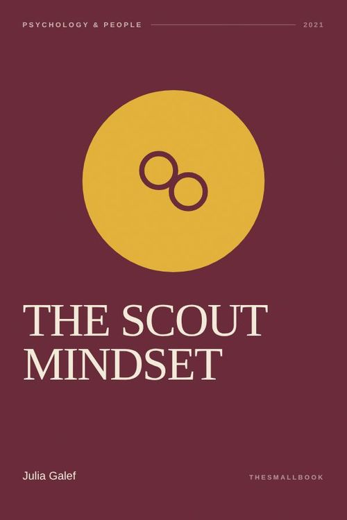

Library › Authors › Julia Galef
Books by Julia Galef
Julia Galef has one book in the library. Every book here is read down to the big idea, the lessons, the lines worth keeping and the actions worth taking. Start with the summary, then buy the full book if it earns a place on your shelf.

The Scout Mindset
2021 · 11 min · 8 lessons
Good judgment is not about being right. It is about wanting to see clearly enough to change your mind when the ground shifts.
Most of us relate to our beliefs the way a soldier relates to a hill: the job is to hold it. Julia Galef calls the alternative the scout mindset. A scout climbs, looks, and reports what is actually there, even when the report is unwelcome. The scout is not free of emotion. The scout simply treats accuracy as worth more than the comfort of being right, which is why the scout ends up making better decisions than the better arguer.
Lessons in the summary
- The Soldier and the Scout
- Why Being Wrong Hurts
- The Illusion of Objectivity
- The Signs of a Scout
- The Outsider Test
- The Selective Sceptic
- How to Be Wrong Well
- The Scout Habit
Lines worth keeping
- The scout's job is not to attack or defend. It is to understand.
- Being wrong is not a humiliation. It is a cost you can afford.
- The feeling of objectivity is not evidence of objectivity.
Questions Julia Galef helps answer
Read nearby authors next
- Devdutt Pattanaik 5 books
- Malcolm Gladwell 5 books
- A.P.J. Abdul Kalam 4 books
- Adam Grant 4 books
- Chip Heath & Dan Heath 4 books
- Daniel H. Pink 3 books
- Gurcharan Das 3 books
- Jonathan Haidt 3 books
Questions Julia Galef helps answer
Where should I start with Julia Galef? Start with The Scout Mindset: Good judgment is not about being right. It is about wanting to see clearly enough to change your mind when the ground shifts.